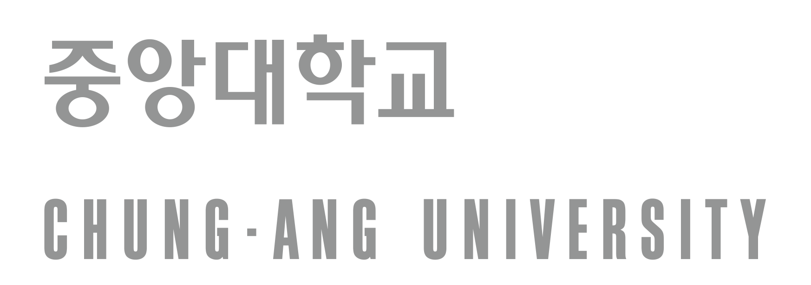
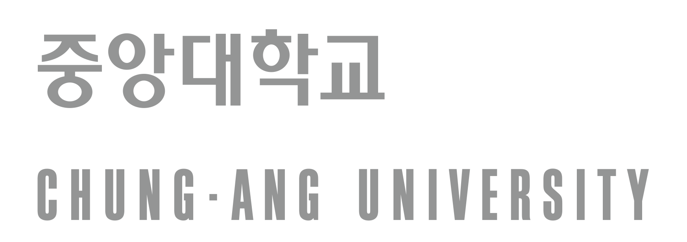
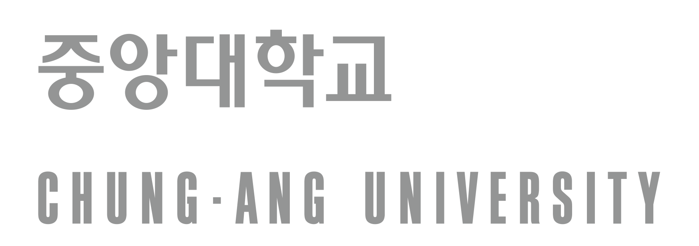

Чун-Анг Их Сургууль, Солонгос Хэл, Утга Зүйн Тэнхим, Солонгос Хэлний Боловсрол-Солонгос Соёлын Мэргэжил
CAU Department of Korean Language and Literature · Major in Korean Language Education & Korean Culture

CAU Department of Korean Language and Literature · Major in Korean Language Education & Korean Culture

Манай мэргэжил нь дэлхийн хэмжээнд K-соёлыг сонирхох сонирхол нэмэгдэж, Солонгос хэлний боловсролын мэргэжилтнүүдийн эрэлт өссөн хандлагад нийцүүлэн, гадаад оюутнуудад зориулан тусгайлан зохион бүтээгдсэн. AI-ийн эринг тэргүүлэх дэлхийн Солонгос хэлний боловсролын мэргэжилтнийг бэлтгэх зорилготой манай мэргэжлийн стратегийн ач холбогдол, системчилсэн сургалтын хөтөлбөрийг танилцуулж байна.
Солонгос хэлний боловсрол-Солонгос соёлын мэргэжил нь гадаад хэлний хувьд Солонгос хэлний боловсролын онол, сургалтын хөтөлбөрийн дизайн, мөн Солонгосын уламжлалт соёлоос орчин үеийн соёлыг багтаасан соёлын контентийн мэдлэгт тэнцвэртэй чадвартай боловсон хүчнийг бэлтгэх зорилготой. Нэгдүгээр курст, оюутнууд AI-г ашиглан академик зорилготой Солонгос хэлний ярих, унших, бичих, илтгэх чадварыг хөгжүүлж, мэргэжлийн үндсэн чадварыг эзэмшинэ. Хоёрдугаар курст, Солонгос хэл судлалын ерөнхий ойлголт, хэлний хэм хэмжээ, уран зохиол, харьцуулсан хэл шинжлэл, дүрмийн онол зэрэг академик суурийг системтэйгээр тавина. Гуравдугаар курст, Хоёрдогч хэл эзэмших онол, дуудлага, дүрэм, ойлгох боловсрол, үнэлгээ, сурах бичиг зэрэгтэй холбоотой заах арга зүйг гүнзгийрүүлнэ. Дөрөвдүгээр курст, боловсролын дадлага, орчин үеийн олон нийтийн соёл, өгүүлэмжийн дүн шинжилгээгээр дамжуулан ажилд дасан зохицох чадварыг хөгжүүлж, портфолиог бүрэн дуусгана.
Манай мэргэжлийн сургалтын хөтөлбөр нь суурь мэдлэгийг бий болгохоос эхлээд талбарын дадлага хүртэлх оюутны чадварыг системтэйгээр нэмэгдүүлэхээр зохион бүтээгдсэн.
AI-д суурилсан академик зорилготой Солонгос хэлээр харилцах чадвар болон мэргэжлийн суурь сургалт.
Солонгос хэл судлал, дүрмийн онол, харьцуулсан хэл шинжлэл зэрэг онолын суурийг бий болгох.
Дуудлага, дүрэм, ойлгох-илэрхийлэх-үнэлгээний боловсролын онол, мөн сурах бичигтэй холбоотой заах арга зүйг гүнзгийрүүлэх.
Боловсролын дадлага, сурах бичиг боловсруулах, олон нийтийн соёл, өгүүлэмжийн дүн шинжилгээгээр дамжуулан талбарын чадварыг бүрэн дуусгах.

Манай мэргэжлийг санал болгох оюутны төрлүүд:
Солонгос хэлний боловсрол-Солонгос соёлын мэргэжил нь системчилсэн сургалтын хөтөлбөр, тодорхой карьерын төлөвлөгөөгөөр дамжуулан Халлю соёлын эринг тэргүүлэх дэлхийн удирдагчдыг бэлтгэхийг зорьж байна.
Энэ хэсэг нь 「2026 оны хичээлийн жилийн хаврын улирлын их сургуулийн цэвэр гадаад иргэний сонгон шалгаруулалтын бүртгэлийн удирдамж」-д үндэслэн, Чун-Анг Их Сургуульд элсэхийг хүсэж буй гадаад оюутнуудад зориулсан сонгон шалгаруулалтын үйл явцын тойм мэдээллийг өгч байна. "Солонгос хэлний боловсрол-Солонгос соёлын мэргэжил" нь гадаад оюутнуудад зориулан шинээр байгуулагдсан мэргэжил тул өргөдөл гаргах шалгуурыг заавал шалгана уу.
1) Боловсрол ба Иргэншил (Нийтлэг)
2) Хэлний Чадвар
Сонгон Шалгаруулах Арга
2026 оны хичээлийн жилийн хаврын улирлын (3-р сарын элсэлт) 2-р сонгон шалгаруулалтын гол хуваарь
| Ангилал | Хугацаа |
|---|---|
| Өргөдөл ба Баримт бичиг хүлээж авах | 2025. 11. 12. (Лхагва) ~ 11. 26. (Лхагва) |
| Элсэгчдийн зарлал | 2025. 12. 19. (Баасан) |
Элсэлтийн сонгон шалгаруулалттай холбоотой хамгийн үнэн зөв, бүрэн мэдээллийг Чун-Анг Их Сургуулийн Олон Улсын Хамтын Ажиллагааны Газрын цахим хуудаснаас шалгана уу.
Чун-Анг Их Сургуулийн Олон Улсын Хамтын Ажиллагааны Газрын Элсэлтийн Мэдээлэл рүү очих холбоос

"Солонгос хэлний боловсрол-Солонгос соёлын мэргэжил"-ийн сургалтын хөтөлбөр нь доод дамжаанд суурь мэдлэгийг бий болгохоос дээд дамжаанд практик хэрэглээ, мэргэшүүлэх хүртэл системтэйгээр холбогдохоор зохион бүтээгдсэн. Энэхүү хөтөлбөрийг үнэнчээр дагаж суралцсанаар оюутнууд төгсөхдөө "Солонгос хэлний багшийн 2-р зэргийн гэрчилгээ" авах шаардлагыг хангаж, Солонгос хэлний боловсролын мэргэжилтний анхны алхамыг хийх боломжтой.
Мэргэжлийн Суурь Хичээлүүд (15 кредит)
| Course Code | Хичээлийн Нэр (Солонгос хэлээр) | Course Title (in English) | Credits |
|---|---|---|---|
| 59311 | 생성AI를 활용한 한국학 전공 말하기 | Korean Studies Speaking Utilizing Generative AI | 3 |
| 59312 | 한국학 자료 읽기 | Academic Reading in Korean | 3 |
| 59313 | AI시대 한국학 기초 어휘론 | The Basic Vocabulary Theory of Korean Studies in the AI Era | 3 |
| 59330 | 생성AI를 활용한 한국학 전공 글쓰기 | Writing in Korean Studies Using Generative AI | 3 |
| 59331 | 생성AI를 활용한 한국학 발표와 토론 | Korean Studies Presentations and Discussions Utilizing Generative AI | 3 |
Мэргэжлийн Заавал Сонгох Хичээлүүд (Дараах 6 хичээлээс 12 кредитийг сонгон судлах)
| Course Code | Хичээлийн Нэр (Солонгос хэлээр) | Course Title (in English) | Credits | |
|---|---|---|---|---|
| 59314 | 한국어학개론 | Introduction to Korean Linguistics | 3 | |
| 59315 | 한국어 규범 | Korean Orthology | 3 | |
| 59316 | 한국의 전통 문화 | Korean traditional culture | 3 | |
| 59332 | 한국어 문법론 | Studies in Korean Grammar | 3 | |
| 59333 | 대조 언어학 | Contrastive Linguistics | 3 | |
| 59336 | 디지털 시대 한국 고전 가요 | Old Korean Classical Poems in the Digital Age | 3 |
| Year | Semester | Category | Course Code | Хичээлийн Нэр (Солонгос хэлээр) | Course Title (in English) | Credits | Certificate Relevance |
|---|---|---|---|---|---|---|---|
| 1 | 1 | Basic | 59311 | 생성AI를 활용한 한국학 전공 말하기 | Korean Studies Speaking Utilizing Generative AI | 3 | |
| 1 | 1 | Basic | 59312 | 한국학 자료 읽기 | Academic Reading in Korean | 3 | |
| 1 | 1 | Basic | 59313 | AI시대 한국학 기초 어휘론 | The Basic Vocabulary Theory of Korean Studies in the AI Era | 3 | |
| 1 | 1 | Free Elective | - | CAU 세미나 | CAU SEMINAR | 1 | Required for 1st-year students |
| 1 | 2 | Basic | 59330 | 생성AI를 활용한 한국학 전공 글쓰기 | Writing in Korean Studies Using Generative AI | 3 | |
| 1 | 2 | Basic | 59331 | 생성AI를 활용한 한국학 발표와 토론 | Korean Studies Presentations and Discussions Utilizing Generative AI | 3 | |
| 2 | 1 | Required | 59314 | 한국어학개론 | Introduction to Korean Linguistics | 3 | Korean Teacher Area 1 |
| 2 | 1 | Required | 59315 | 한국어 규범 | Korean Orthology | 3 | Korean Teacher Area 1 |
| 2 | 1 | Required | 59316 | 한국의 전통 문화 | Korean traditional culture | 3 | Korean Teacher Area 4 |
| 2 | 1 | Major | 59317 | 인공지능시대의 한국 드라마 | Korean TV Dramas in the Era of Artificial Intelligence | 3 | |
| 2 | 1 | Major | 59318 | 옛 이야기로 읽는 한국 역사와 문화 | Reading Korean History and Culture through Old Stories | 3 | Korean Teacher Area 4 |
| 2 | 1 | Major | 59319 | 시를 통해 보는 한국 현대사 | Korean Modern History through Poetry | 3 | Korean Teacher Area 4 |
| 2 | 2 | Required | 59332 | 한국어 문법론 | Studies in Korean Grammar | 3 | Korean Teacher Area 1 |
| 2 | 2 | Required | 59333 | 대조 언어학 | Contrastive Linguistics | 3 | Korean Teacher Area 2 |
| 2 | 2 | Required | 59336 | 디지털 시대 한국 고전 가요 | Old Korean Classical Poems in the Digital Age | 3 | |
| 2 | 2 | Major | 59334 | 한국 문학의 이해 | Understanding Korean Literature | 3 | Korean Teacher Area 4 |
| 2 | 2 | Major | 59335 | 인공지능시대 시 창작 | Poetry Writing in the Age of Artificial Intelligence | 3 | |
| 3 | 1 | Major | 59320 | 한국어 교육개론 | Introduction to Korean Language Education | 3 | Korean Teacher Area 3 |
| 3 | 1 | Major | 59321 | 한국어 표현 교육론 | Studies in Teaching Methodologies of Korean Speaking and Writing | 3 | Korean Teacher Area 3 |
| 3 | 1 | Major | 59322 | 한국 문화 교육론 | Studies in Korean Culture Education | 3 | Korean Teacher Area 3 |
| 3 | 1 | Major | 59323 | 한국 영상 예술로 보는 한국 문화 | Korean Culture viewed through Korean Visual Arts | 3 | |
| 3 | 1 | Major | 59324 | 디지털 시대 고전 서사문화론 | Theories of Korean Classical Narrative in the Digital Age | 3 | |
| 3 | 1 | Major | 59325 | 한국 고전 문학과 여성 | Korean Classical Literature and Female | 3 | |
| 3 | 1 | Major | 59326 | AI시대 한국인의 소통과 문화 | Korean Communication and Culture in the Age of AI | 3 | |
| 3 | 2 | Major | 59337 | 외국어 습득론 | Second Language Acquisition | 3 | Korean Teacher Area 2 |
| 3 | 2 | Major | 59338 | 한국어 이해 교육론 | Studies in Teaching Methodologies of Korean Listening and Reading | 3 | Korean Teacher Area 3 |
| 3 | 2 | Major | 59339 | 한국어 문법 교육론 | Studies in Korean Grammar Education | 3 | Korean Teacher Area 3 |
| 3 | 2 | Major | 59340 | 한국어 발음 교육론 | Studies in Korean Pronunciation Education | 3 | Korean Teacher Area 3 |
| 3 | 2 | Major | 59341 | 한국어 평가론 | Studies in Korean Language Assessment | 3 | Korean Teacher Area 3 |
| 3 | 2 | Major | 59342 | 한국 대중 서사와 스토리텔링 | Korean Popular Narrative and Storytelling | 3 | |
| 4 | 1 | Major | 59327 | 한국어 교수 방법론 | Studies in Teaching Methodologies of Korean Language | 3 | Korean Teacher Area 3 |
| 4 | 1 | Major | 59328 | 한국어 교재론 | Studies in Textbooks for Korean Language Education | 3 | Korean Teacher Area 3 |
| 4 | 1 | Major | 59329 | 한국학 현장 실습 | Korean Studies Field Practice | 3 | Graduation Thesis Substitute |
| 4 | 2 | Major | 59343 | 한국 현대 대중 문화 | Korean Contemporary Popular Culture | 3 | Korean Teacher Area 4 |
| 4 | 2 | Major | 59344 | 한국어 교육 실습 | Practicum in Korean Language Teaching | 3 | Korean Teacher Area 5 |
| 4 | 2 | Major | 59345 | 인공지능 시대의 현대 소설 | A Modern Novel in the Age of Artificial Intelligence | 3 |
Энэхүү мэргэжлийн сургалтын хөтөлбөрийг дүүргэсэн оюутнууд "Солонгос хэлний багшийн 2-р зэргийн гэрчилгээ" авах боломжтой. Гэрчилгээг авахын тулд холбогдох хичээлийн 5 чиглэлээр нийт 45-аас дээш кредит цуглуулах шаардлагатай. Гэрчилгээний тогтолцооны талаарх дэлгэрэнгүй мэдээллийг Үндэсний Солонгос Хэлний Хүрээлэнгийн албан ёсны цахим хуудаснаас шалгана уу.
Системтэйгээр зохион байгуулагдсан энэхүү сургалтын хөтөлбөр нь оюутнуудыг мэргэжилтэн болж өсөхөд шаардлагатай бүх академик болон практик суурийг хангадаг. Зэргийг амжилттай авахын тулд хангах ёстой тодорхой төгсөлтийн шаардлагууд дараах байдалтай байна.
| Ангилал | Мэргэжлийн Суурь | Мэргэжлийн Сургалт (Заавал сонгох хичээлийг багтаасан) | Мэргэжлийн Нийт Кредит |
|---|---|---|---|
| Үндсэн Мэргэжил (Шинэ элсэлт) | 15 | 45 (Заавал сонгох 12) | 60 |
| Мэргэжлийн Гүнзгийрэл | 15 | 66 | 81 |
※ Бүх курсийн голч оноо 2.0-оос дээш байх шаардлагатай.
Солонгос хэл, утга зүйн тэнхимийн багш нар нь Үндэсний хэл шинжлэл, Солонгос хэлний боловсрол, сонгодог болон орчин үеийн уран зохиол, хүмүүнлэгт суурилсан контентийн судалгаа зэрэг олон төрлийн салбарт гүн гүнзгий мэргэшсэн. Тэдний өргөн хүрээний академик мэргэшил нь шинээр байгуулагдсан Солонгос хэлний боловсрол-Солонгос соёлын мэргэжлийн сургалтын зорилгыг хэрэгжүүлэх болон оюутнуудыг дэлхийн боловсон хүчин болж өсөх бат бөх суурь болно.

Багш нар нь бүх оюутныг академик зорилгодоо хүрэх, мэргэжилтэн болж нийгэмд амжилттай ороход нь дэмжлэг үзүүлэхийн төлөө хүчин чармайлт гаргаж байна.
Мэдээлэл: Энэ хэсэг нь "Солонгос хэлний боловсрол-Солонгос соёлын мэргэжил"-тэй холбоотой албан ёсны мэдэгдлүүдийг байршуулах зориулалттай.
Цаашид цахим хуудас албан ёсоор ажиллаж эхлэх үед сургалтын хөтөлбөрийн өөрчлөлт, тэтгэлэгт хамрагдах мэдээлэл, томоохон эрдэм шинжилгээний арга хэмжээ зэрэг чухал мэдээллүүд эндээр дамжуулан шуурхай шинэчлэгдэх болно.
Одоо суралцаж буй болон ирээдүйн шинээр элсэх оюутнууд та бүхнийг идэвхтэй оролцохыг хүсэж байна.